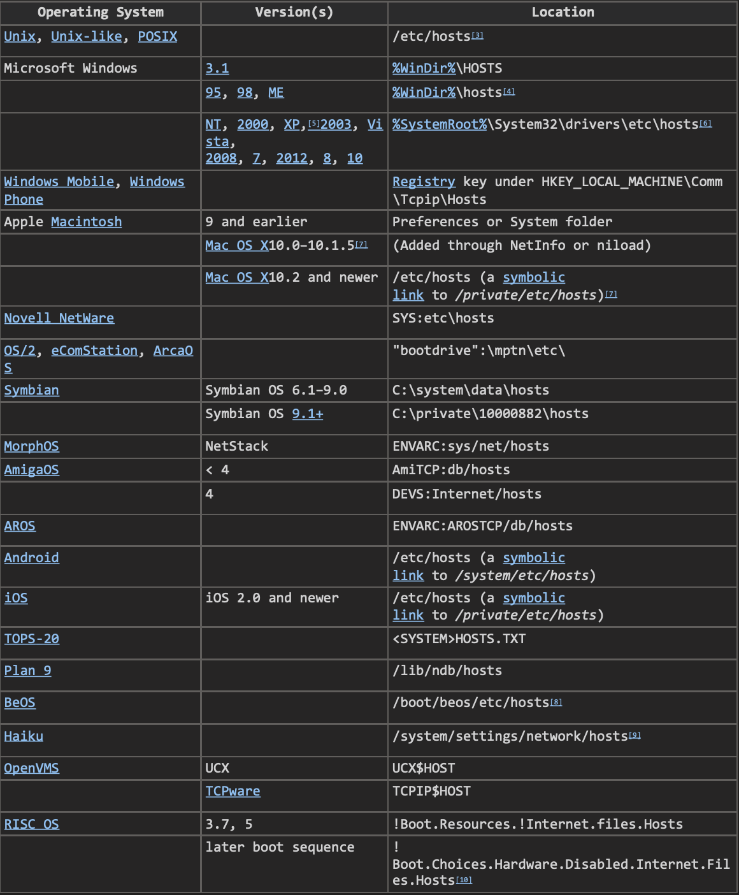
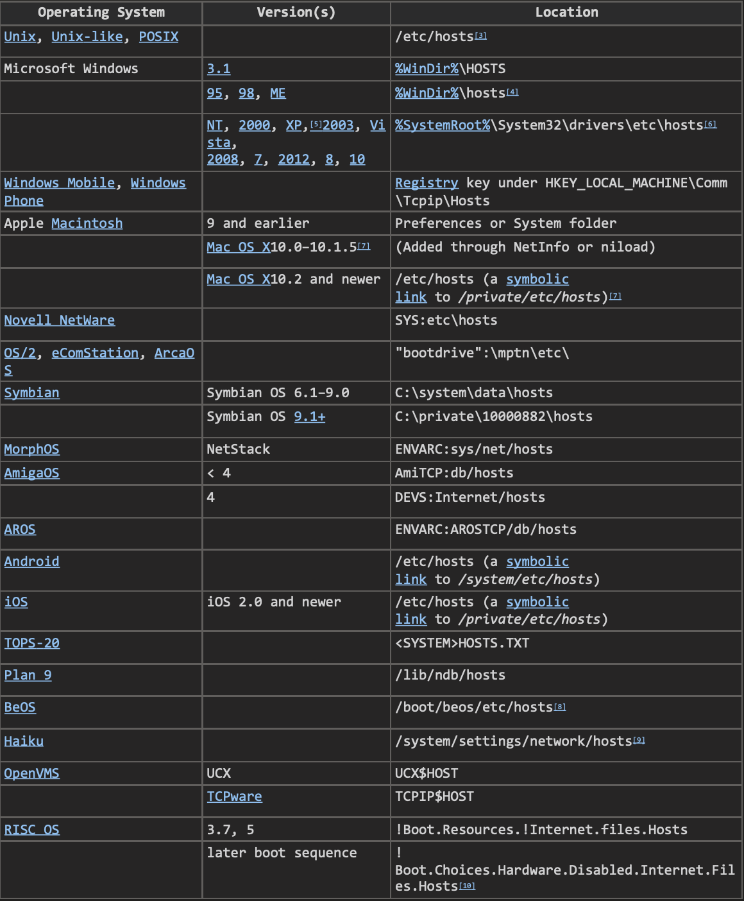

IP주소와 hosts
두 대의 컴퓨터가 통신하기 위해 반드시 필요한것 -> IP주소
모든 운영체제에는 hosts라는 파일이 있다. -> 파일에 example.com의 IP주소는 (서버 주소) 이다. 라고 입력하면 -> example.com 이라고 접속했을 때 컴퓨터는 hosts파일을 읽어서 IP주소(서버주소)로 접속하게 됨.
운영체제별 hosts 위치

두 대의 컴퓨터가 통신하기 위해 반드시 필요한것 -> IP주소
모든 운영체제에는 hosts라는 파일이 있다. -> 파일에 example.com의 IP주소는 (서버 주소) 이다. 라고 입력하면 -> example.com 이라고 접속했을 때 컴퓨터는 hosts파일을 읽어서 IP주소(서버주소)로 접속하게 됨.

악의적인 의도를 가진 해커가 Hosts 파일을 변조하면 악성파일에 노출될 수 있음.
만약 금융사이트의 호스트 파일을 가져와서 기존 사이트와 똑같은 화면을 만들어 놓는다면? 나의 금융정보를 입력했을 때 그 정보를 그대로 넘겨주는 것.
클라이언트 컴퓨터(소비자) ------ 서버 컴퓨터(생산자)
소비자로서 알아야 할 지식은 여기까지임.

DNS 서버는 전세계에 무수히 많다.
등록대행자 추천(freenom.com-1년동안 무료)
Dns4u.ga A 52.231.13.22 : DNS record
홈페이지를 운영하는데 내 웹페이지가 아니라서 (https://web-n.github.io/web1_html_internet/) 이런 긴 이름을 써야한다. -> 사용자는 저 주소를 이용해서 접속을 시도한다. -> 서비스가 너무 잘되버리면? -> 서버를 이사를 하게 됨.(https://opentutorials.org/course/1) -> 여기서 문제는 기존의 사용자들이 알고있던 주소는 위의 옛 주소... -> 사용자들은 404 Not found라는 오류화면을 보게될 것.(종속성)
만약 이 서비스가 도메인을 붙일 수 있도록 지원을한다?(dns4u.ga) -> 서비스를 이동하게 되면 이전을 할 때 도메인을 새로운 주소로 옮기고 기존의 주소를 파괴한다. -> 사람들은 여전히 dns4u.ga라는 주소로 접속을 할것이고 그 주소는 새로운 서버를 가리키게 될것(이를 위해 도메인이라는 것이 존재하는 것)
만약 내가 가지고 있는 홈페이지의 주소가 https://web-n.github.io/web1_html_internet/ 이라고 하자 -> 이때 사용자들이 dns4u.ga라는 도메인을 통해서 내 사이트를 볼 수 있게 하려면 -> dns4u.ga 라는 도메인 네임을 구입한다 -> DNS Server에 dns4u.ga의 IP는 (github에서 우리 서비스를 이용하려면 192.30.252.153 을 이용하세요 라고 알려줌) 192.30.252.153 이라고 A record로 추가를 한다. -> github에게 앞으로 dns4u.ga 라는 주소로 접속이 들어오면 그 접속은 기존에 https://web-n.github.io/web1 로 들어왔을 때 서비스하던 컨텐츠를 보내달라고 알려줘야함
사용자들이 dns4u.ga 로 접속을 하면 자신의 컴퓨터에 연결되어있는 DNS Server에게 물어봄 -> dns4u.ga의 IP가 뭐냐? -> 알려줌 -> 알려준 IP로 접속을 하게됨 -> IP로 접속하면서 github가 운영하는 웹 서버에 dns4u.ga라는 도메인으로 접속을 할것임 -> 웹서버는 접속이 dns4u.ga라는 도메인으로 들어왔다(도메인에게 요청을 하고있다는 사실을 알수 있음) -> github는 dns4u.ga https://web-n.github.io/web1_html_internet/ 이 규칙에 따라서 사용자에게 응답해줌 -> 사용자는 결국 dns4u.ga 라는 도메인을 통해서 컨텐츠를 가져갈수 있게된다.